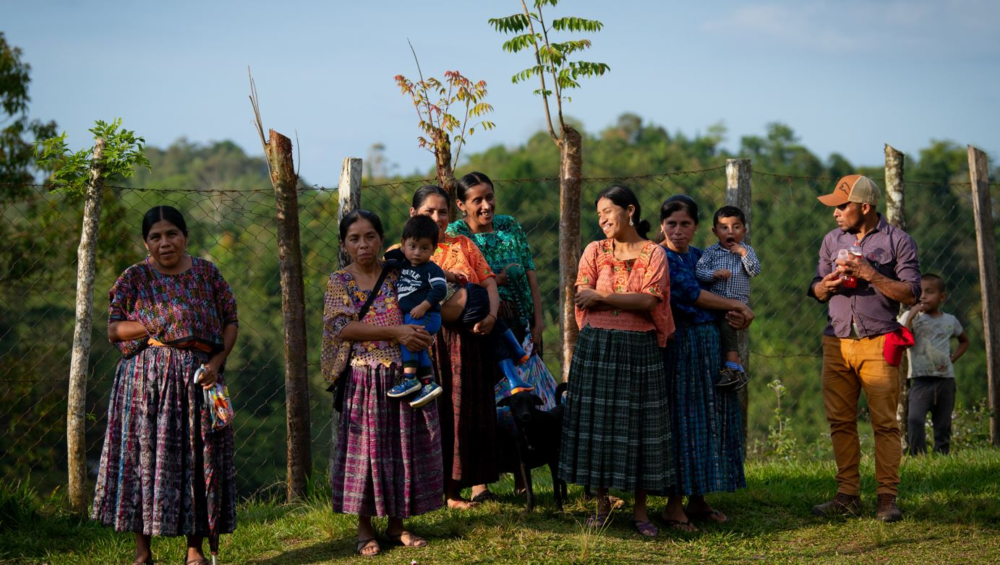
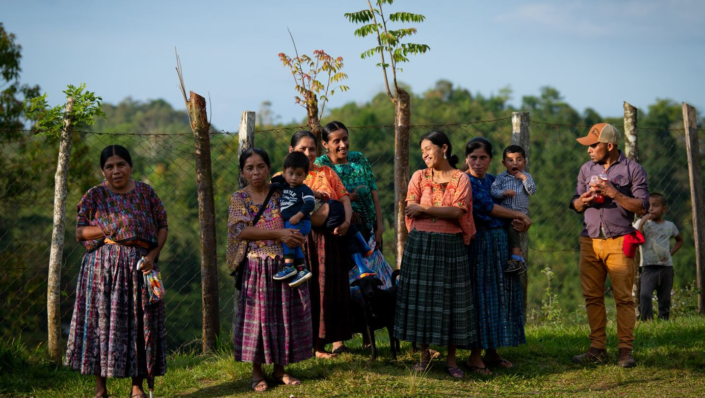

Este proyecto está dedicado a brindar apoyo y desarrollo sostenible a comunidades de escasos recursos, con un enfoque en educación, salud y bienestar.

 

Nuestro objetivo principal es mejorar la calidad de vida de las personas a través de iniciativas educativas y de salud. El proyecto involucra capacitaciones, construcción de infraestructura básica y apoyo médico a quienes más lo necesitan.
Hasta la fecha, el proyecto ha impactado a más de 500 familias, mejorando sus condiciones de vida y brindando oportunidades para su desarrollo personal y comunitario.